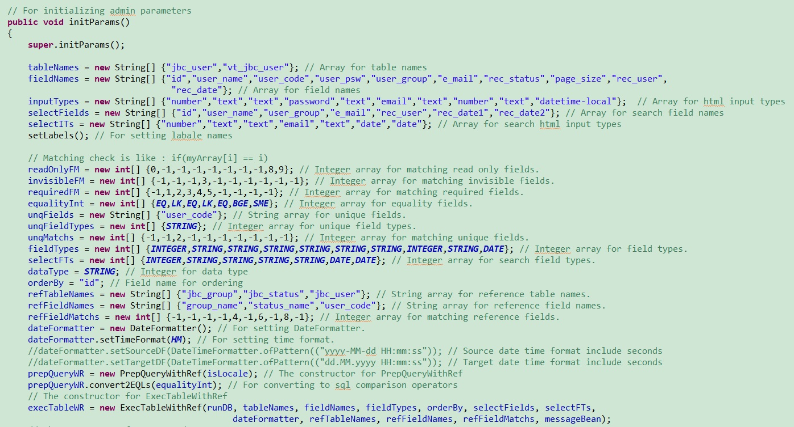

Java Basic Content Adviser Template Software
The creation of software architecture is a time consuming process for web-based applications and indeed for the preparation of special software in general. There is an advantage for those who have a ready-made software infrastructure. Of course, however, it is useful if it is a current infrastructure.
A java library that creates sqls in the background for form structures, page design with HTML5 bootstrap and jquery, front-end encoding with pure javascript, data transfer with ajax 2 and json, business logic with java servlet and jsp in the background, and many more If a ready template is meaningful for you, it is useful to read more.
Select, insert, update, delete As a SQL DML command, it is an important part of the encoding. So how does a library that prepares DML codes make our work easier? (sdbapi)
The code snippet that performs the select operation in a jsp code appears above.
Of course, jsp code in html page design forms can be as follows.
There will also be a table section on our page.
We also have buttons for paging structure and printouts.
It is better not to skip the part about the alarms.
javascript start variables and value assignment are also made on the jsp page.
Set the data for the HTML table.
Modal form settings are made in html.
Functions in jbca.js javascript:
HTML table pagination settings
Creating HTML table rows
A section from modal form formation
Update form to an alternative solution to the modal page

The profile of the section where the search parameters are sent to the servlet with ajax and the json data is parsed and the table is created.
Similar ajax scripts are also available for adding, updating and deleting records.
For file download, we can see a script section like below.
It is possible to import the data in the HTML table as excel, csv, json and pdf. To do this, let's look at a cross-section of the preparation of the lists.
And file transfers
Receiving ajax data on the servlet side
Setting of start data and authorization control
Search operations and return the data via json and ajax
Entering, updating and deleting records and then sending json data
A section of the application menus
An image from the operation of the mandatory field control HTML5 property at the new data entry
HTML5 date selection feature to search for information
Bulk representation of the code form
Modal image of the code form
First of all, the parameters for the form must be determined.

After a good analysis and relational database design, the use of a powerful architecture can save you 30-40% of your time in your enterprise software projects.